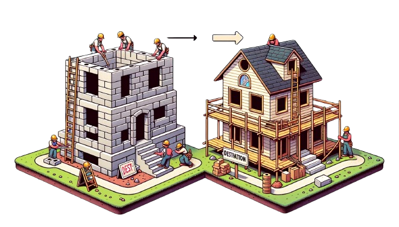

1. What is React?
1. JavaScript library to build Dynamic and interactive user interfaces
2. Developed at Facebook in 2011.
3. Currently most widely used JS library for front-end development.
4. Used to create single page application (page does not re-load).
2. Working of DOM
1. Browser takes HTML and create DOM.
2. JS helps us modify DOM based on user actions or events.
3. In big applications, Working with DOM becomes complicated.
3. Problems with JS
1. React has a simpler mental model
2. JS is cumbersome
3. JS is Error-prone
4. JS is Hard to maintain
4. Working of React
1. No need to worry about querying and updating DOM elements.
2. React creates a web page with small and reusable components
3. React will take care of creating and updating DOM elements.
4. IT saves a lot of time, cheezein aasan hai, pahele se likhi hui hain
5. JS Vs React

1. JS is imperative: You define steps to reach your desired state.
2. React is Declarative: You define the target UI state and then react figures out how to reach that state.
6. Intro to Components
Components help us write reusable, modular and better organized code.
React application is a tree of components with App Component as the root bringing everything together.